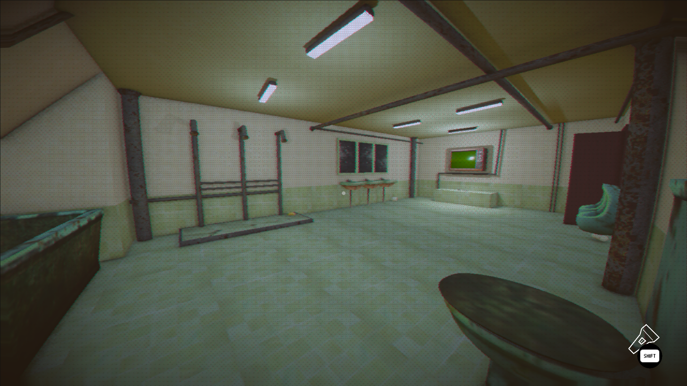
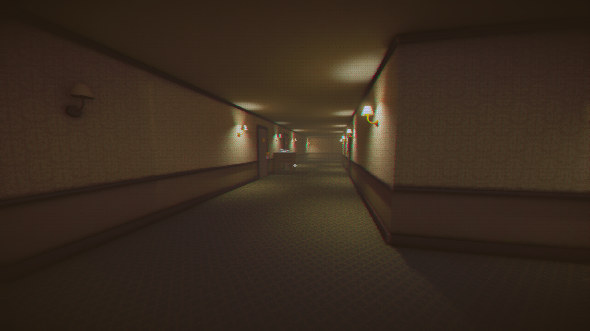
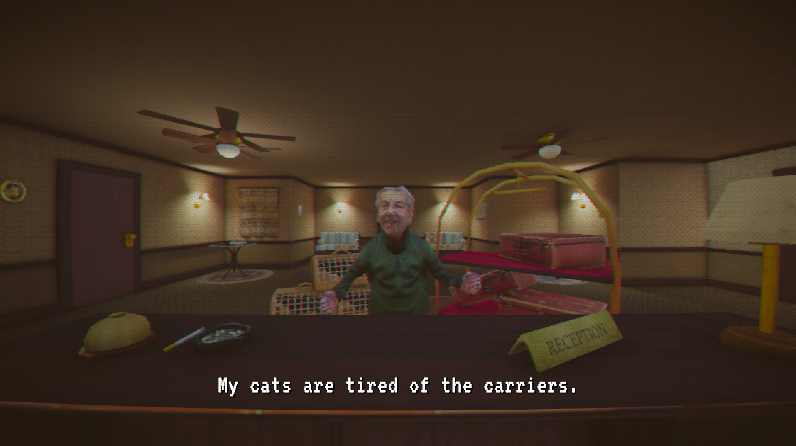
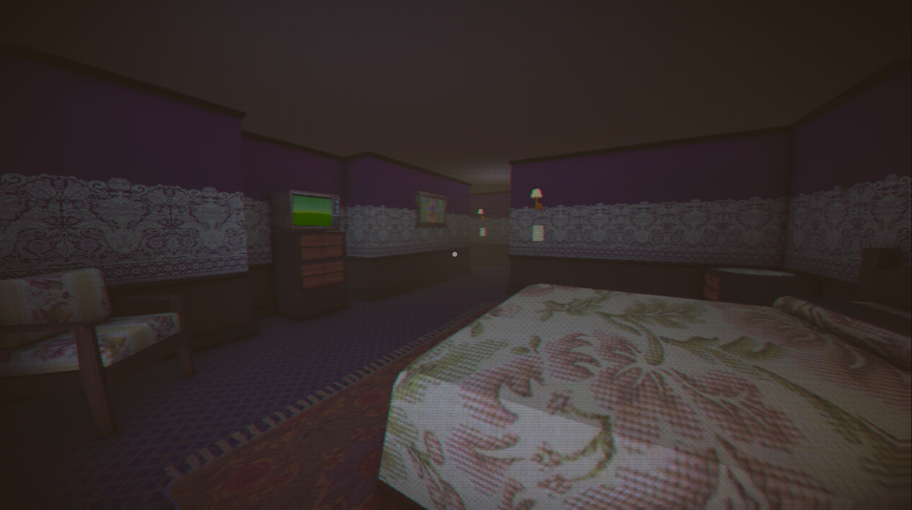

Overlook Inn
Overlook Inn is a short exploration game blending serie, liminal-space vibes with a lighthearted, silly tone. Wander, listen for meows, and try not to question the hotel too much.
Play it here: Overlook Inn on itch.io.
In this project I focused on the game feel and visual quality while keeping the web build lightweight and responsive. Below is a quick breakdown of my main contributions.
Game trailer
Selected art highlights from the project:




What I worked on
- Postprocess shader setup for mood, readability, and stronger visual identity.
- Lighting pass for atmosphere, contrast, and better depth separation.
- Web optimization so the itch.io version loads faster and runs more smoothly.
- Game events.
- Sound design and implementation.
Postprocess shaders
I implemented and tuned several postprocess effects to support the eerie tone of the inn and keep player focus on gameplay-critical areas. The stack was balanced to avoid over-processing while still adding cinematic quality.
- Color grading pass to establish a cohesive palette and mood.
- Dithering effect and glitch effects to add visual texture and tension.
- Subtle vignette and contrast shaping to guide attention.
- Eye blink effect to add different events.
- Final pass adjustments to preserve clarity.
Illumination and atmosphere
I built the illumination with a gameplay-first approach: dramatic enough to sell horror atmosphere, but clear enough to read space, hazards, interaction points and performace for web builds.
Web build optimization
For the web release, I reduced file sizes and rendering costs to improve startup time and runtime stability.
- Reduced expensive postprocess settings where visual impact was minimal.
- Asset and texture budget cleanup for faster loading.
- General performance profiling and iteration to keep frame pacing stable.